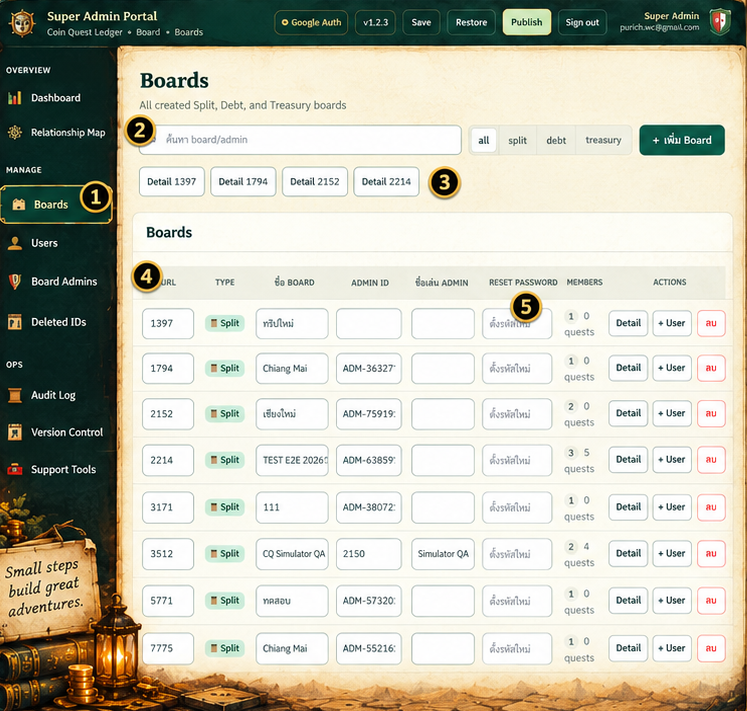
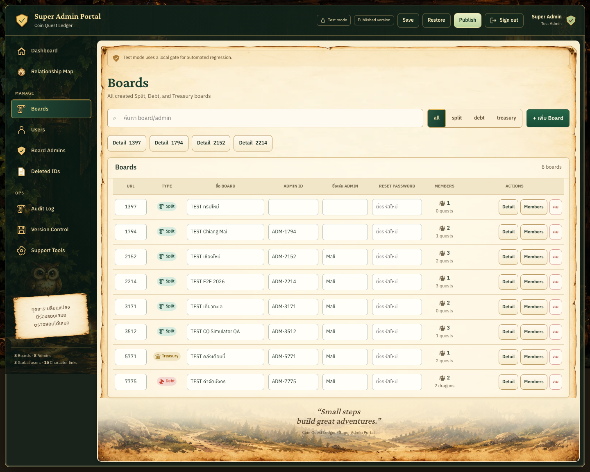
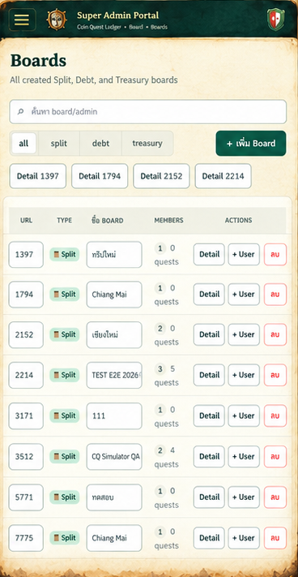
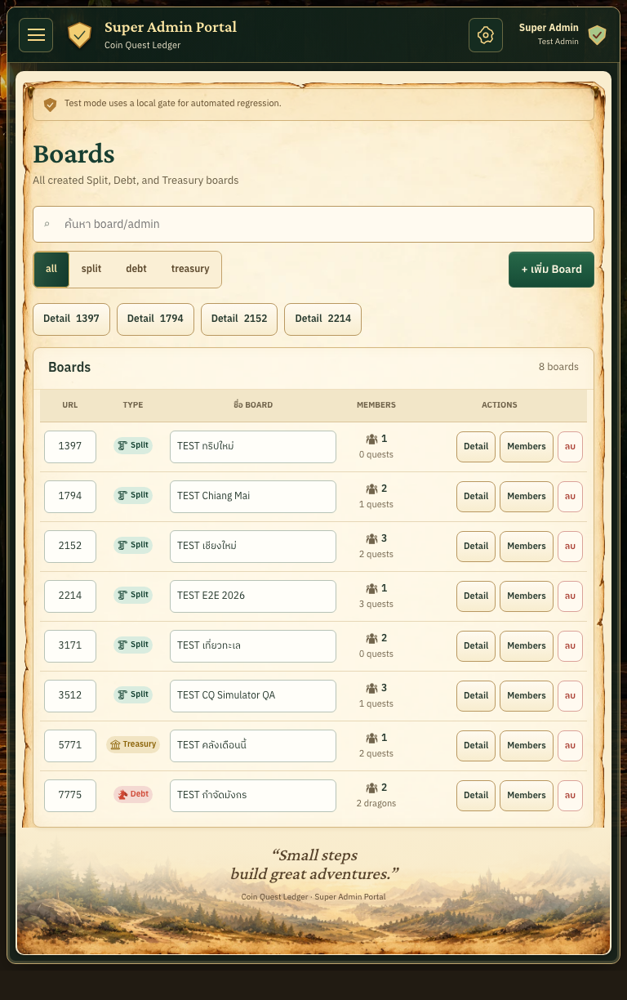
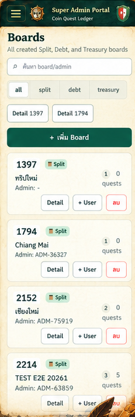
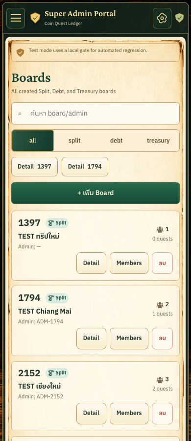

2026-10-14 · Chromium · isolated TEST records. Reference crops exclude poster framing. Aspect ratios are preserved; sample data differs. Dashboard's existing shared shell and parchment remain canonical.






Full mobile page, all eight records and footer · Mobile no-results state